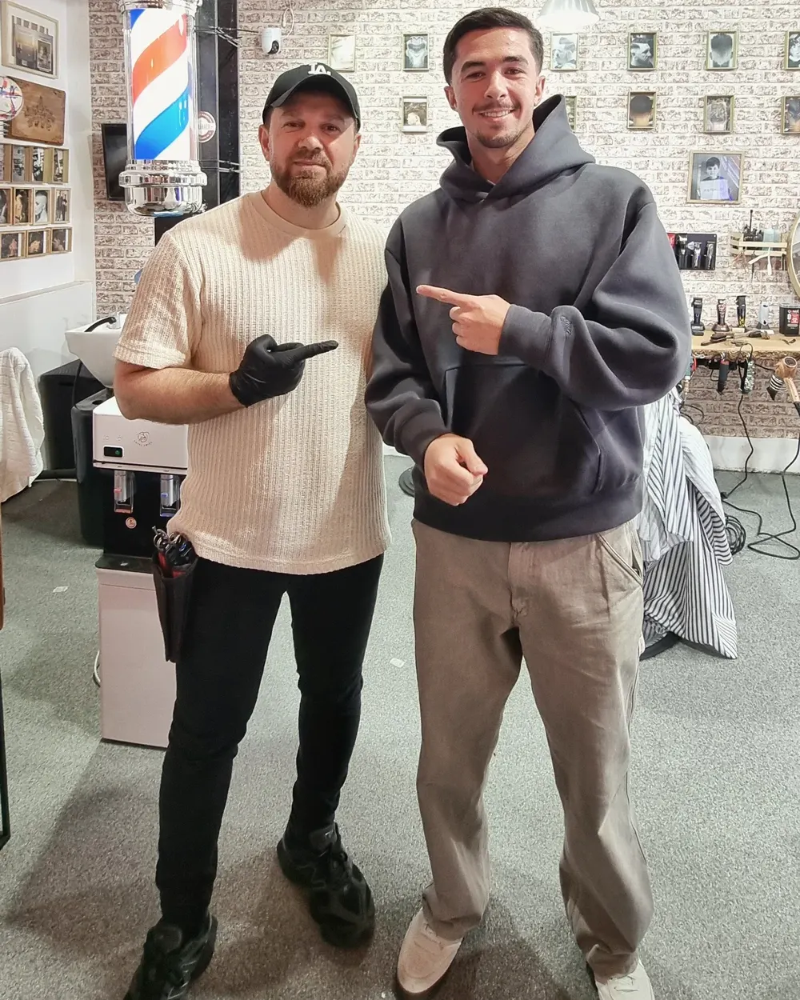
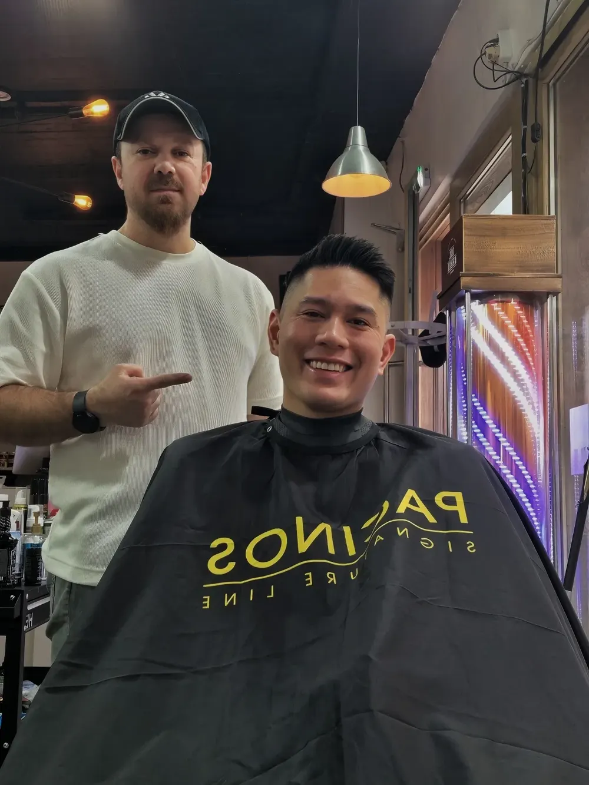
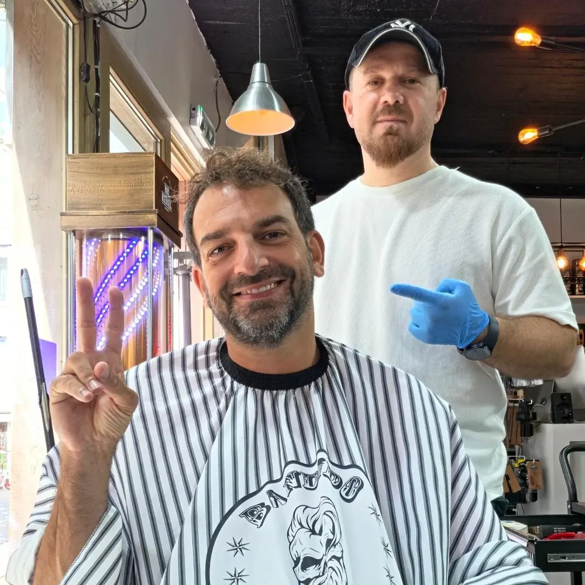
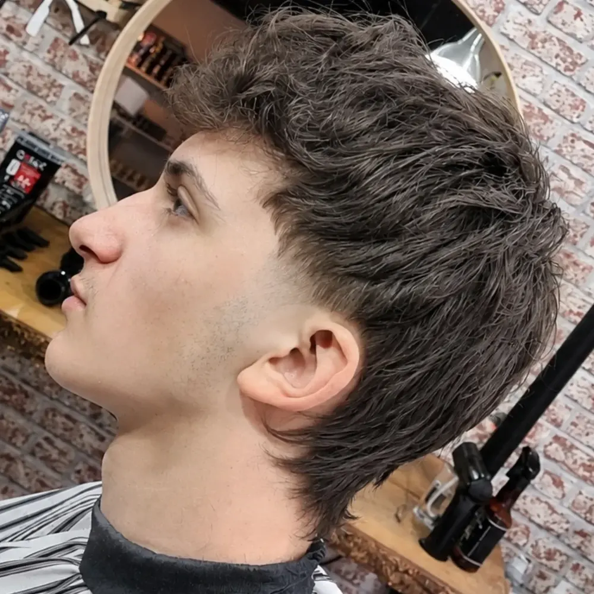
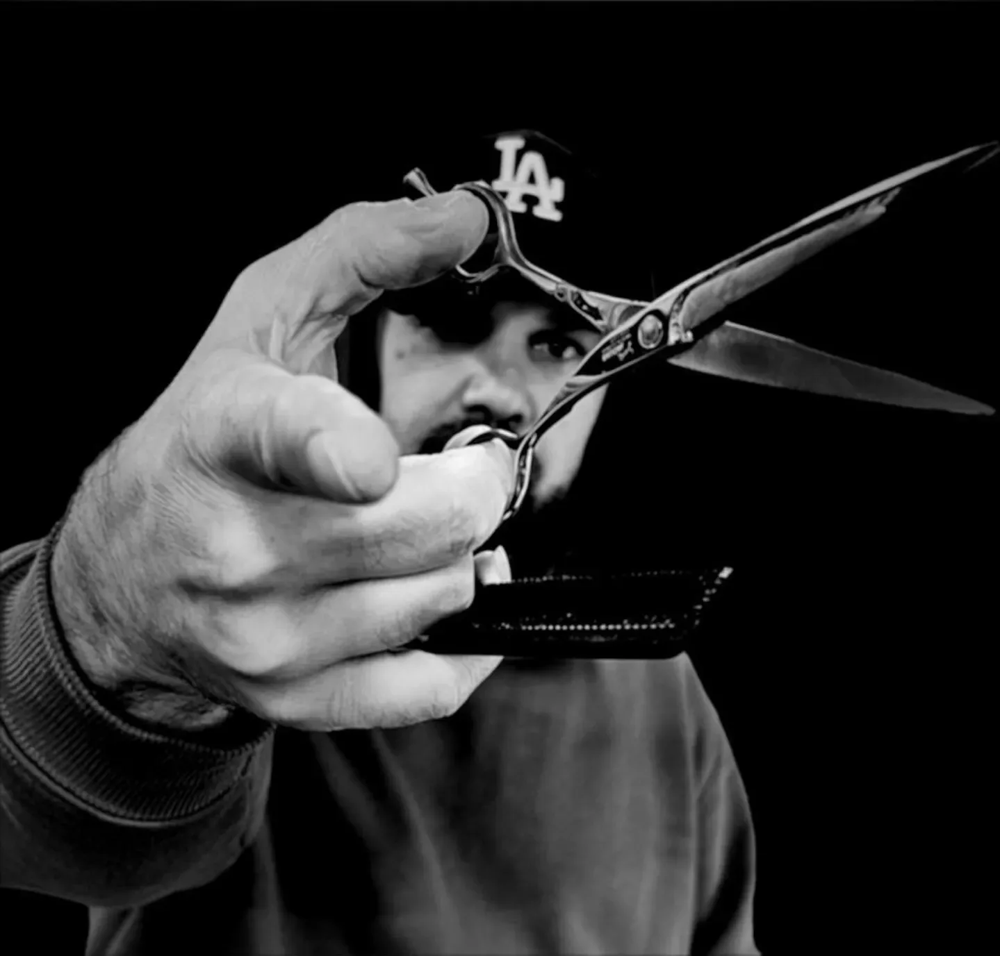

"Vaste klant voor 9 jaar, altijd goed, nooit iets slecht en aangename barber."Ronny DierckxGoogle
Vaste klanten
Hier tel je in jaren, niet in knipbeurten
Wie één keer bij Leo in de stoel zat, komt terug. Dat lees je in bijna elke review. Drie van hen vertellen het zelf.
"Al 7 jaar mijn vaste kapper! Kapper heeft voor mij de perfecte stijl, altijd netjes, proper en verzorgd! Toffe kerel om een sociaal babbeltje mee te hebben."Geert De la RuelleGoogle
"Leo is gewoon een vakman door en door. Elke keer opnieuw vertrekt hij van wat jij wil, luistert hij goed en het resultaat is telkens opnieuw precies."John JohnGoogle
4,8★★★★★
224 reviews op Google
224 reviews op Google
Het vaste ritueel
Klaar? Dan wijst Leo naar zijn werk
Na elke knipbeurt volgt een foto: Leo naast de klant, vinger naar de nieuwe snit. Zo staat het op onze Instagram, klant na klant.
Een musicproducer, een fotomodel, een vaste klant van jaren: iedereen krijgt dezelfde aandacht en dezelfde foto.
#antwerpen#musicproducer#jazz#photomodel#sportpaleis






Uit de stoel
Strak, of net een beetje wild
Van een klassieke side part met glans tot een mullet met textuur. Leo vertrekt van wat jij wil, en van wat je haar doet.
 Side part
Side part
Textuur Slick back
Slick back Mullet
Mullet
Wat we doen
Knippen, scheren en even niks
- KnippenVoor mannen en kinderen. Van fade tot schaarwerk.
- ScherenVerschillende scheerbehandelingen, baard en contouren.
- Hot towel shave met massageJe gaat niet alleen verzorgd naar buiten, maar ook uitgerust.
Leo spreektNederlandsFrançaisEnglish
Langskomen
Tot in de Korte Nieuwstraat
Midden in het centrum van Antwerpen. Stuur Leo een berichtje voor een afspraak, hij antwoordt in het Nederlands, Frans of Engels.
Sparta Barber
Korte Nieuwstraat 3, 2000 Antwerpen
- Maandag9u - 17u
- Dinsdag9u - 17u
- Woensdag9u - 17u
- Donderdag9u - 17u
- Vrijdag9u - 19u
- Zaterdag9u - 19u
- ZondagGesloten